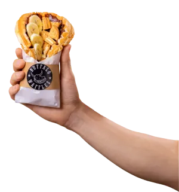

Inversión inicial total
desde
$43.000.0001
Incluye el derecho de franquicia ($10.000.000) y el capital de trabajo ($3.000.000). Según formato y ubicación.
Buffalo Waffles · oct 2026
Cuánto se invierte, qué se paga cada mes, cuánto demora abrir y dónde ya estamos. Todo lo que Buffalo Waffles ha publicado, ordenado en un tablero, con su fuente a la vista y lo pendiente marcado como pendiente.
Postular toma un minuto y no tiene costo ni compromiso [a confirmar].

Inversión inicial total
desde
$43.000.0001
Incluye el derecho de franquicia ($10.000.000) y el capital de trabajo ($3.000.000). Según formato y ubicación.
Buffalo Waffles · oct 2026Apertura
3 a 6 meses
Desde la firma hasta abrir.
Buffalo · oct 2026Contrato
5 años
Renovable por 4 periodos. De uso de marca y modelo.
Buffalo · oct 2026Presencia
11 regiones4
De Arica a Punta Arenas.
Sitio · mapaLocales en la red
+50 · 553
El sitio dice +50; el blog, más de 55. Falta una cifra única con fecha de corte.
Por confirmarEl día a día de un Buffalo Waffles según lo que la marca ha publicado: un equipo chico, dos canales de venta y un consultor que te sigue de cerca.
Depende del formato y del volumen de ventas. Un equipo chico facilita la gestión y el control de costos.
Blog · FAQ 10Clientes en el local y en plataformas de delivery, para aprovechar distintos momentos de consumo.
FAQ 111 : 10
Cada KAM (consultor de franquicia) acompaña a un máximo de 10 franquiciados.
Muchos franquiciados participan activamente en la operación del día a día. Estás en el local, con tu equipo y tu KAM.
También puedes tenerlo como inversión y delegar en un encargado. La marca recomienda que igual sigas de cerca los indicadores del local.
No se pide
Muchos franquiciados vienen de otros rubros. Importan el compromiso, la gestión y las ganas de crecer.
FAQ 3Varios franquiciados han sumado nuevos locales una vez consolidada su primera operación.
Cuántos franquiciados tienen más de un local [a confirmar]
FAQ 15
Waffles dulces y salados para llevar en la mano, galletas y shakes. Una carta que se reconoce de Arica a Punta Arenas.
Producto real · fotos de marcaTres pasos y tu ficha queda lista para la reunión inicial. Si vienes del simulador, ya llenamos lo que elegiste.

Un ejecutivo de franquicias revisará tu ficha y te contactará en [X] horas hábiles. ¿Quieres adelantar? Elige tu reunión inicial.
Maqueta: no se envió ningún dato.
Si los números te hacen sentido, el siguiente paso es una conversación con datos reales de tu zona y tu formato.